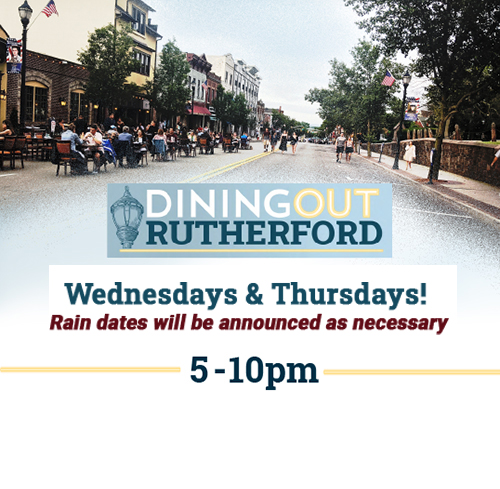

Regularly scheduled Dining Out evenings will take place through October 1. Weather permitting, parts of Park Avenue will be closed on Wednesdays and Thursdays. In the event of inclement weather, Dining Out will be pushed to the next suitable evening.
While the Borough is able to provide the funding for closing the street one night a week, the second night has been made possible by a generous resident who is a longtime supporter of Rutherford restaurants and wants to help them succeed during this difficult time. This donation will allow an additional 10 evenings of Dining Out to be spread out over the next three months, weather permitting. On Dining Out nights Park Avenue will be closed to street traffic between 4-11 pm so patrons can enjoy ample outdoor distancing.
Check out the list of Rutherford restaurants below that offer outdoor seating on Dining Out nights and throughout the week:
Park Ave from the Library to Ames Ave will be closed from 4-11pm.
Dining Out Rutherford will be an ongoing event on Wednesdays with a raindate of Thursdays. We will do our best to update you with street closures and participating restaurants and businesses as that information becomes available.
When dining out, it is strongly recommended that you make reservations so that our restaurants can better prepare for their evening. Please remember that business owners, staff and patrons are all creating a new normal as this chapter of reopening begins. Be respectful and patient with each other!
All participating businesses will comply with the regulations outlined by the Governor’s Executive Order and the NJ Department of Health.
Are you a Rutherford business owner? See the link below where you can find necessary forms and information for operating outdoors. Email rvanwinkle@rutherfordboronj.com with any questions